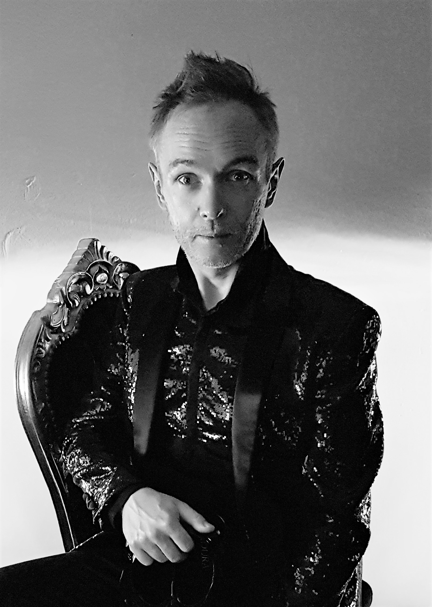

JAKUB BURZYŃSKI – śpiewak (kontratenor), teoretyk muzyki i dyrygent. Urodził się w 1976 roku w Zabrzu. Początkowo kształcił się jako pianista, ukończył Teorię Muzyki na Akademii Muzycznej w Katowicach oraz Śpiew Solowy na Akademii Muzycznej w Bydgoszczy. Studiował również dyrygenturę symfoniczno-operową. W 1998 roku założył zespół La Tempesta, z którym regularnie koncertuje i nagrywa repertuar XVI-XIX wieku w nurcie historycznie poinformowanym. Kreował główne i drugoplanowe role w operach Charpentiera (Actéon), Purcella (King Arthur), Vivaldiego (Dorilla in Tempe), Sarro (Didone abbandonata), Haendla (Giulio Cesare, Rinaldo), Myslivečka (Motezuma), Mozarta (Apollo et Hyacinthus, Mitridate re di Ponto), Krauzego (Balthazar) i Zycha (Poiesis). Jako solista i dyrygent dokonał nagrania ponad dwudziestu CD dla wytwórni BIS, ARTS, DIVOX, NAXOS, MUSICON oraz DUX, w tym 16 płyt z muzyką polską. Jego debiutancki album solowy Vespers of Sorrow z kompozycjami Antonio Vivaldiego został okrzyknięty Nagraniem Roku przez brytyjski portal Music Web International, a fragmenty tego nagrania wykorzystane zostały w nagrodzonym na Festiwalu Filmowym w Cannes francuskim filmie Divines (2016). Równie chętnie jak muzykę dawną prezentuje na koncertach utwory współczesne: wykonywał m.in. partie solowe w utworach A. Pärta, A. Raskatova, K. Głowickiej, J. Sarwasa i K. Pendereckiego. Jakub Burzyński jest kierownikiem artystycznym Festiwalu Muzycznego Barok w Radości, wieloletnim wykładowcą Letniej Szkoły Muzyki Barokowej w Kelč, Holešovie, Valticach i Broumovie (Czechy), kierownikiem artystycznym Międzynarodowej Letniej Szkoły Muzyki Dawnej Schloss Scharfeneck oraz stałym prelegentem Festiwalu Cichej Muzyki w Toruniu. W 2018 roku został stypendystą Ministra Kultury i Dziedzictwa Narodowego w zakresie badania stylu polskiego w kompozycjach wokalnych 18 wieku.
